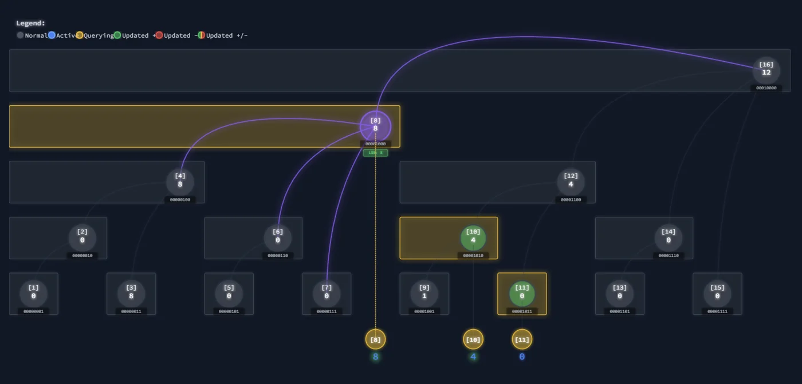

Fenwick trees
Follow prefix sums, range updates and range-sum queries, then extend them into two dimensions. Stored intervals and step-by-step traces show why each bit operation visits the right entries.
Explore connections
Open the application, then follow what changes
A Fenwick tree explained through the ranges it stores. Follow prefix queries and updates through an array, then extend the bookkeeping to range operations and two dimensions, with intermediate state showing why each jump is useful.
-
01
Partition the range
Each array entry stores a particular aligned interval.
-
02
Gather a prefix
Combine disjoint stored intervals to answer a cumulative query.
-
03
Propagate an update
Visit the entries whose represented intervals contain the change.
-
04
Extend the structure
Inspect range-update bookkeeping and the two-dimensional construction.
A tree encoded in an array
A Fenwick tree stores partial sums in a flat array. The least significant set bit of an index determines the range that entry covers. Updating an element follows i += i & -i; accumulating a prefix follows i -= i & -i. The same integer representation describes both the stored intervals and the path through them.
This study makes that connection visible. Each operation produces a trace containing the visited index, its binary representation, the extracted bit, the arithmetic operation, and the next index. The displayed tree is a view of those relationships; the calculation itself operates on the array.
From point changes to interval changes
The range-update mode stores a difference array through the same Fenwick implementation. Adding a value over an interval becomes two endpoint changes, and a prefix query reconstructs the value at a point. This gives a concrete connection between differentiation, accumulation, and data representation.
The dual-tree mode extends that construction to range sums. One tree tracks endpoint coefficients and another tracks their weighted offsets; a prefix is reconstructed as x · query(B1, x) − query(B2, x). Operations identify which tree each step belongs to, allowing the paired updates to be followed together. The two-dimensional mode applies the bit traversal along both axes and forms rectangle sums from four prefix queries.
Inspect the intermediate state
The interface connects the original values, stored ranges, and operation history. Stepwise playback highlights accumulated query entries and changed update entries, while snapshots preserve the state being explained. Binary labels expose why a traversal jumps to a particular parent instead of treating the jump as an animation convention.
A useful starting sequence is a point update, a query spanning that point, and then the equivalent interval update in difference-array mode. The contribution is a compact implementation and explanation of how a representation change turns a different query problem into the same small set of operations.
More recorded views · 2
Current scope
- The one-dimensional interface limits tree size to 4–64 entries and is arranged for inspecting individual operations. Its visual playback does not measure large-array throughput.